1. Cuộc "bỏ phố về rừng" của chàng kỹ sư Lâm nghiệp và nữ quản lý Y tế
Từ trung tâm xã Nghĩa Hành, con đường vào trang trại của vợ chồng anh Nguyễn Viết Việt - chị Nguyễn Thị Nhung còn khoảng 20 km đường đất lổn nhổn đá, mù bụi. Qua khỏi khu dân cư, trang trại nằm lọt giữa núi rừng với chuồng nuôi, khu sản xuất và căn nhà tạm.
Ở đây, một ngày của cặp vợ chồng trẻ Việt - Nhung bắt đầu từ lúc trời còn chưa sáng và kết thúc khi những việc cuối cùng trong trang trại đã xong. Những video Nhung đưa lên mạng xã hội về cuộc sống “bỏ phố về làng” có thể đem lại cho người xem cảm giác bình yên, nhưng rất khó hình dung người đàn ông đang lúi húi giữa chuồng trại kia từng có 15 năm làm việc ổn định ở thành phố.
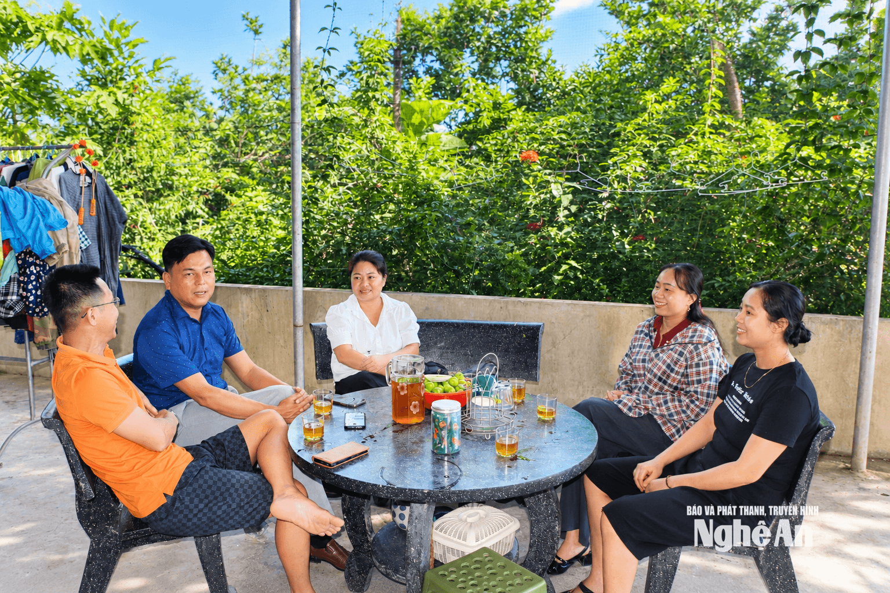
Năm 2006, sau khi tốt nghiệp Đại học Nông Lâm với tấm bằng giỏi, anh Việt được tuyển dụng theo diện thu hút về làm việc tại Chi cục Lâm nghiệp tỉnh. Công việc đúng chuyên môn, ổn định; gia đình có nhà ở thành phố, con cái học hành nền nếp. Vậy mà năm 2020, Việt xin nghỉ việc. Anh không bị đẩy ra khỏi công việc, cũng không phải về quê vì không còn lựa chọn mà để hiện thực hoá ước mơ.
Bởi, từ những năm còn đi làm, anh đã có thời gian gắn với chăn nuôi, từng làm trang trại bò và luôn ấp ủ ý định có một mô hình sản xuất của riêng mình. Khi ý định ấy trở thành quyết định, điều anh phải bỏ lại không chỉ là một công việc có lương đều đặn, mà là cả một đời sống gia đình đã được gây dựng ở thành phố.
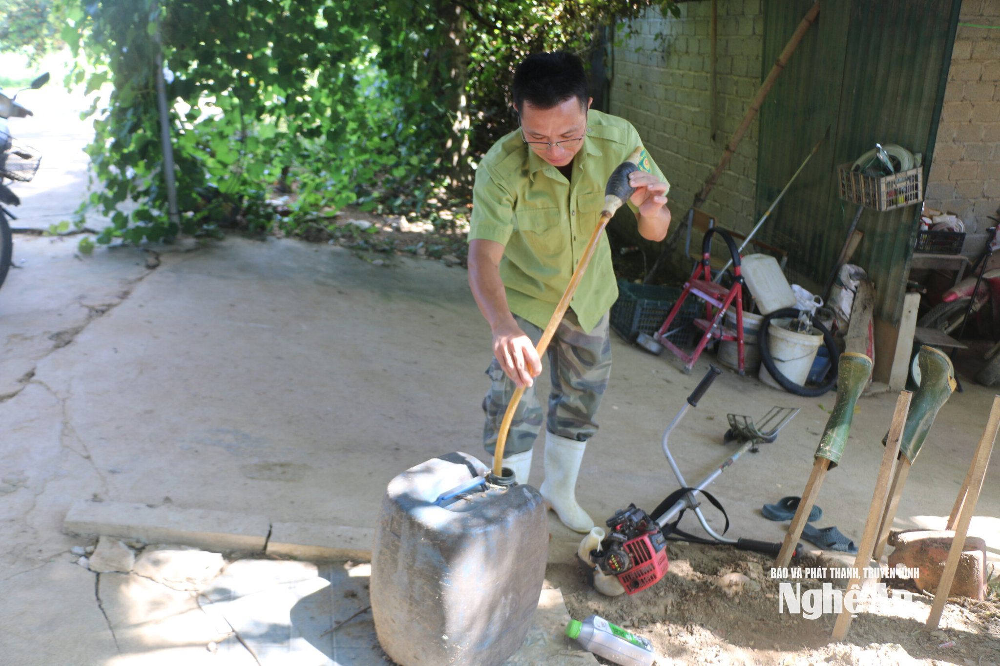
Năm 2022, anh Việt về quê trước. Chị Nhung vẫn làm việc ở thành phố. Một năm sau, mỗi lần về quê, thấy Việt da sạm, bàn tay chai, gương mặt đen, râu tóc mọc dài, Nhung trở lại thành phố, có một đêm gần như thức trắng để cân nhắc.
Chị tốt nghiệp ngành y, từng làm điều dưỡng trưởng và giữ vị trí quản lý tại một số bệnh viện, doanh nghiệp liên quan đến chăm sóc sức khỏe, thu nhập 20-25 triệu đồng mỗi tháng. Một công việc như vậy không dễ từ bỏ. Nhưng cuối cùng, chị xin nghỉ việc, đồng hành với chồng. Những khoản tiền tích lũy, tài sản ở phố cùng những khoản vay mượn được dồn vào trang trại.
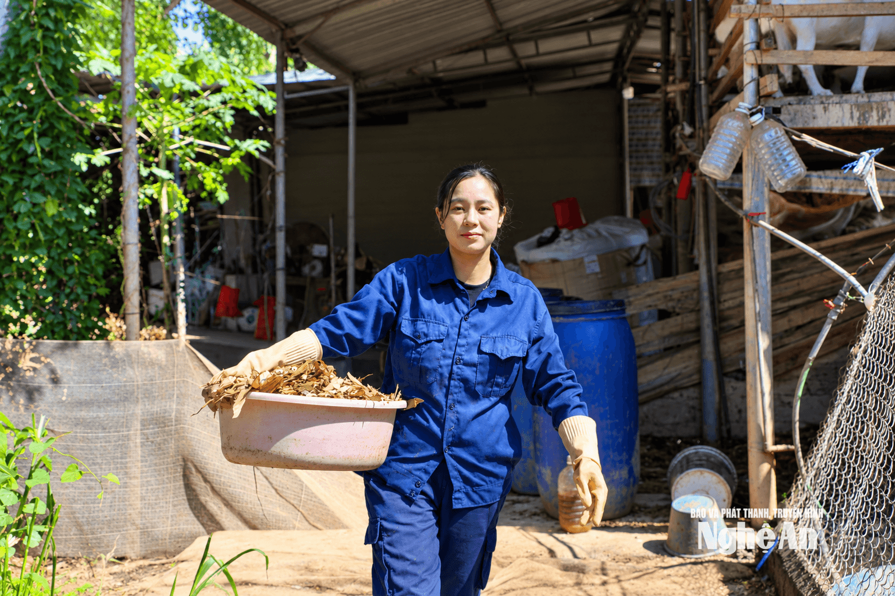
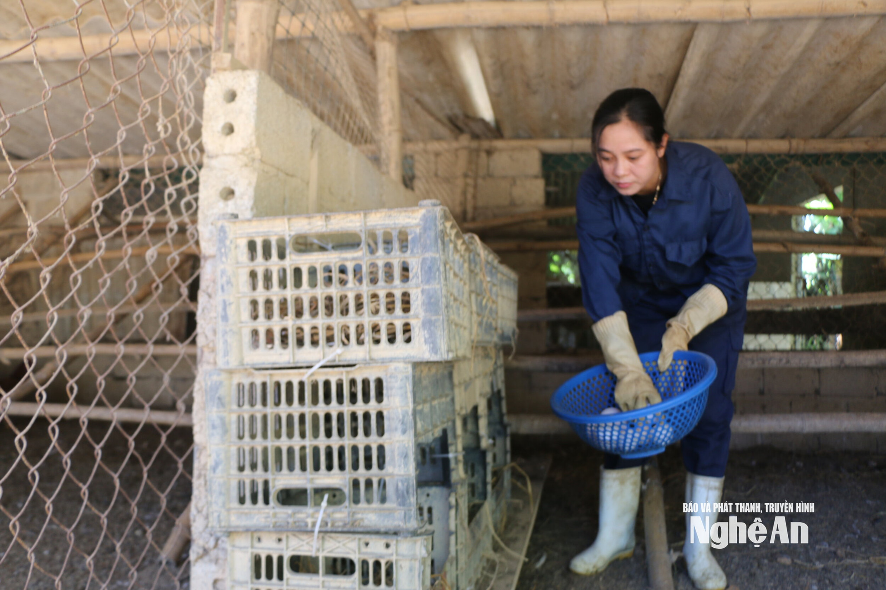
Đứng dậy từ thất bại: Lời giải cho bài toán thị trường
Những ngày đầu, vợ chồng anh Việt mua gom đất của 11 hộ, khoảng 2,5 ha, rồi phát quang, cải tạo, dựng chuồng trại. Đất phải thuê máy để xử lý, cây trồng, vật nuôi phải tự thử nghiệm. Có những việc tưởng chỉ cần bỏ vốn là xong, nhưng đến khi làm mới thấy từng khâu đều có thể phát sinh vấn đề. Con giống mắc bệnh, vật nuôi chết, thời tiết thay đổi, kế hoạch sản xuất phải tính lại.
Trước khi nghĩ đến chuyện làm ra một sản phẩm có giá trị, họ phải học cách đứng vững trước những lần đối mặt với thất bại: Dịch Covid-19 bùng phát, sản xuất ra không tiêu thụ được; giá giảm, dịch tả lợn châu Phi ảnh hưởng đến chăn nuôi; các đợt lũ liên tiếp cuốn trôi vật nuôi, làm hư hỏng chuồng trại...
Nhưng cũng từ những thất bại ấy, họ buộc phải tìm lời giải cho câu hỏi: Đã bỏ phố về quê, làm thế nào để những gì đang có trở thành sinh kế bền vững?
Có đất, có chuồng trại, có vật nuôi, nhưng làm ra sản phẩm chưa đồng nghĩa với việc tìm được người mua. Khi chưa có lượng khách hàng ổn định, nếu chỉ trông chờ thương lái, vợ chồng anh khó chủ động trong sản xuất.
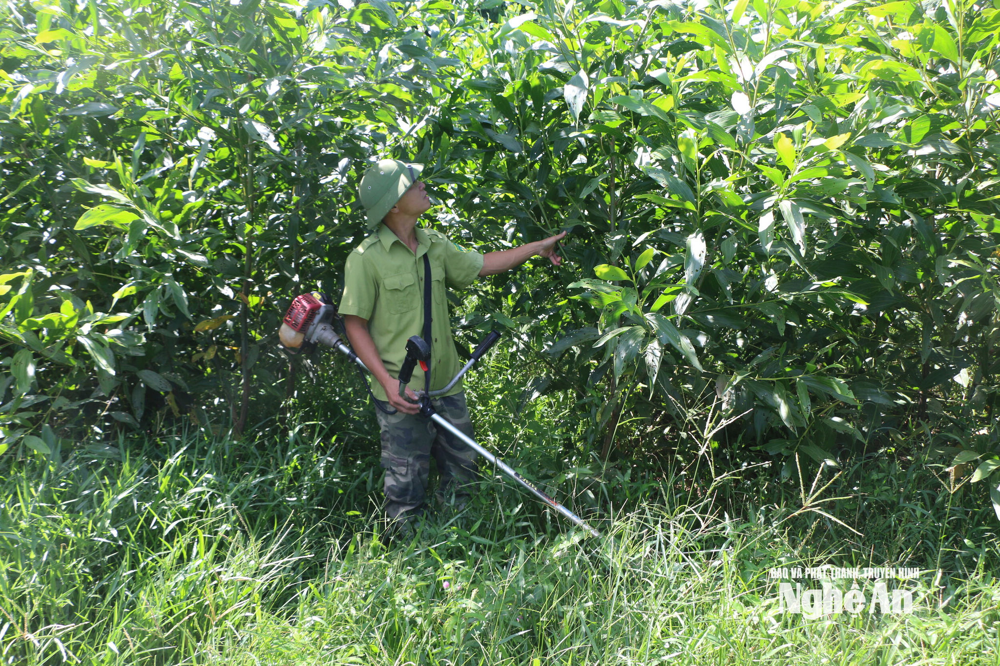
Với trang trại cách khu dân cư gần 20 km đường rừng, việc đưa sản phẩm đến tay người mua vốn đã không dễ; làm sao để khách biết đến nơi sản xuất và tin tưởng chất lượng lại càng khó hơn. Để giải bài toán này, Nguyễn Thị Nhung đầu tư máy hút chân không, thuê người hỗ trợ sơ chế, đóng gói, dán nhãn và tìm phương án vận chuyển phù hợp với yêu cầu của khách.
Chị còn dùng điện thoại ghi lại công việc thường ngày ở trang trại, từ chăm sóc vật nuôi, thu hoạch đến sơ chế sản phẩm và cuộc sống của gia đình giữa núi rừng. Những hình ảnh chân thực dần thu hút người xem; có người hỏi mua, có người đặt hàng sau khi biết cách gia đình chăm sóc vật nuôi và chuẩn bị sản phẩm.
Có thời điểm, tài khoản của Nhung thu hút hơn 1.000 người theo dõi. Chiếc điện thoại trở thành cầu nối để khách hàng biết đến trang trại, còn vợ chồng chị có thêm một cách tìm kiếm đầu ra ngoài những mối quan hệ quen biết.
2. Sầm Ngọc Sướng và "Nhà Sam": Thổi hồn cốt văn hóa bản địa thành sinh kế
Cũng “bỏ phố về làng”, anh Sầm Ngọc Sướng lại mang theo một hành trang rất khác, đó là những năm tháng làm việc trong ngành dịch vụ và cách nhìn của một người từng trải qua môi trường kinh doanh hiện đại.
Sinh năm 1996, trong một gia đình làm nông ở xã Mường Ham, Sướng lớn lên giữa núi rừng miền Tây, nơi điều kiện tiếp cận công nghệ, ngoại ngữ khi ấy còn nhiều hạn chế. Từ nhỏ, anh đã thích công nghệ thông tin nhưng không có điều kiện theo đuổi. Bù lại, khả năng học ngoại ngữ mở ra cho Sướng một hướng đi khác.
Tốt nghiệp đại học năm 2018, một năm sau, anh sang Singapore làm việc trong ngành nhà hàng khách sạn. Từ vị trí nhân viên phục vụ, Sướng từng bước đảm nhận những công việc quản lý, được đào tạo trong môi trường kinh doanh chuyên nghiệp. Sau khoảng 4 năm ở Singapore, trở về Việt Nam, anh tiếp tục làm việc tại Thành phố Hồ Chí Minh và từng giữ vị trí Tổng Giám đốc, quản lý gần 100 nhân viên trong một chuỗi nhà hàng cao cấp.
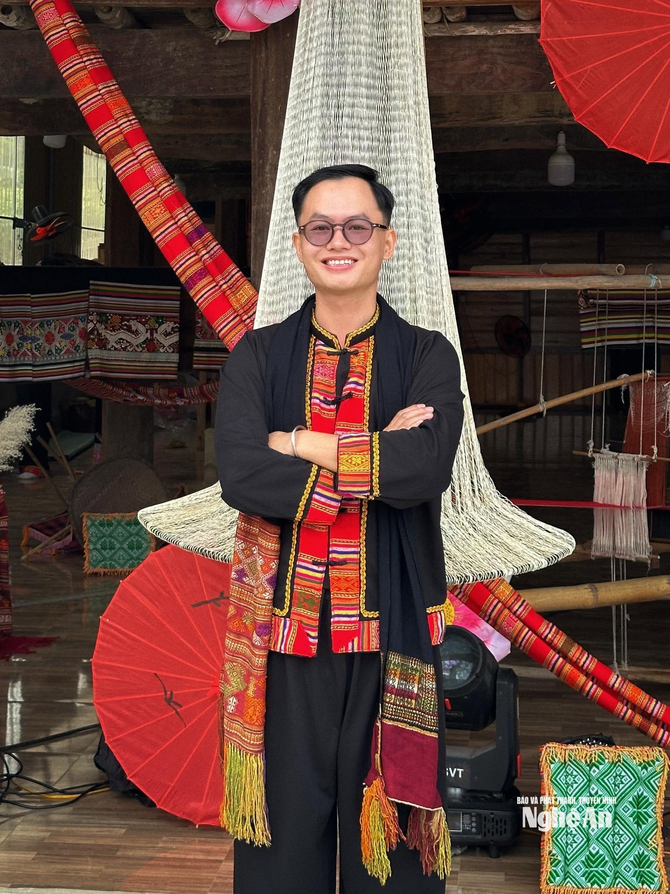
Đó là một con đường nghề nghiệp có thu nhập tốt, có vị trí và những cơ hội phát triển mà nhiều người trẻ tìm kiếm. Những năm làm việc ở Singapore và Thành phố Hồ Chí Minh cho Sướng nhiều kinh nghiệm quản lý. Anh học được cách vận hành bộ máy nhân sự, xây dựng quy trình phục vụ và tạo ra trải nghiệm cho khách hàng. Trong môi trường ấy, một món ăn không chỉ được đánh giá bằng hương vị mà còn bởi nguyên liệu, cách giới thiệu, không gian thưởng thức và câu chuyện phía sau nó.
Sướng từng làm việc với những mô hình nhà hàng thuộc phân khúc cao cấp, nơi từng khâu phục vụ đều được tính toán kỹ lưỡng. Chính những trải nghiệm ấy dần hình thành trong anh một cách nhìn khác về giá trị của ẩm thực và văn hóa. Điều đáng nói là khi đã có vị trí trong nghề, anh lại bắt đầu nghĩ đến một nơi tưởng như cách rất xa môi trường kinh doanh mình đang theo đuổi: Quê nhà.
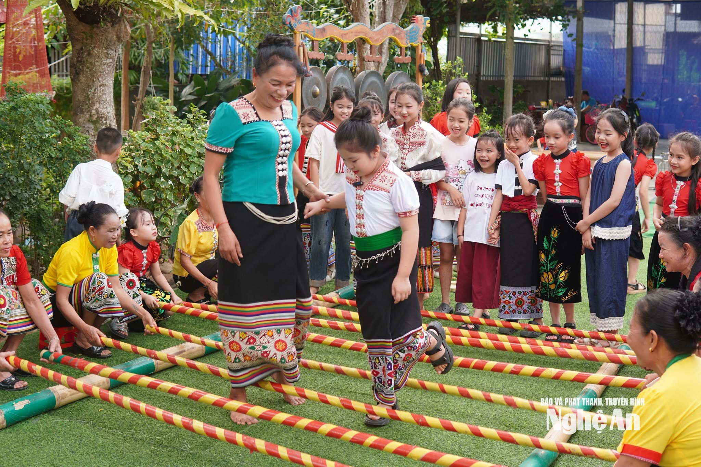
Khởi nghiệp từ những gì quê hương sẵn có
Năm 2025, sau nhiều năm làm việc xa quê, Sướng trở về và nhận ra những cảnh quan núi rừng, không gian bản làng, món ăn truyền thống, nghề dệt cùng nếp sinh hoạt của đồng bào Thái ở quê mình còn nhiều giá trị và tiềm năng du lịch cộng đồng chưa được khai thác.
Từng làm nhà hàng và quản lý dịch vụ, Sướng hiểu rằng điều thu hút khách không nhất thiết phải là những thứ được đầu tư cầu kỳ. Đôi khi, một bữa cơm với những món ăn bản địa, một tấm thổ cẩm được dệt bằng tay hay một buổi giao lưu văn nghệ bên choé rượu cần cũng có thể trở thành trải nghiệm đáng nhớ, nếu được tổ chức và giới thiệu đúng cách. Từ suy nghĩ ấy, anh bắt đầu hình dung một công việc mới, khởi đầu từ chính những gì quê mình đang có.
Sướng từng cân nhắc làm việc tại một cơ sở lưu trú mới ở địa phương, nhưng sau cùng, anh muốn tự xây dựng một mô hình của riêng mình. Thay vì tiếp tục con đường đã có sẵn, Sướng chọn trở về, thử vận dụng những gì đã học và trải nghiệm để khai thác giá trị văn hóa, ẩm thực của quê hương. Với anh, đó không chỉ là một hướng lập nghiệp mới cho bản thân, mà còn là cơ hội để những giá trị vốn quen thuộc với người dân bản địa được nhiều người biết đến hơn.
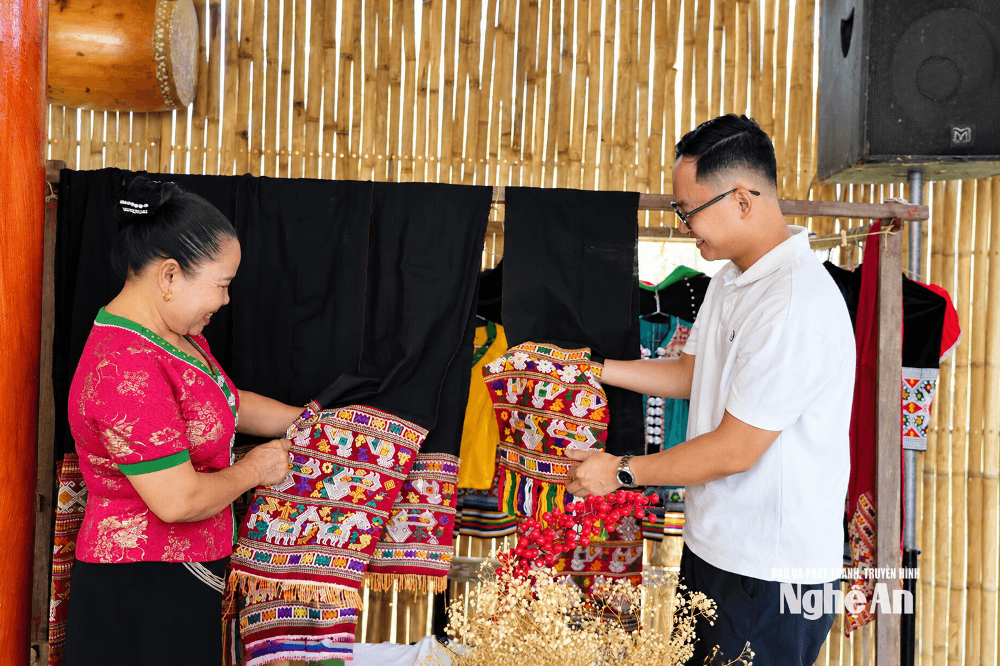
Quyết định ấy không được gia đình đón nhận ngay. Với những người cả đời gắn bó với bản làng, việc một người trẻ học hành đàng hoàng, từng làm việc ở nước ngoài, nay từ bỏ công việc quản lý ở thành phố để trở về làm dịch vụ từ ẩm thực, văn hóa địa phương là điều không dễ hình dung. Sướng phải đối diện với sự can ngăn của người thân và cả những ánh nhìn hoài nghi từ xung quanh.
Có lúc bất đồng với bố mẹ, anh phải nhờ người thân đứng ra chia sẻ, giúp hai thế hệ hiểu nhau hơn. Sướng nhận ra rằng, để được gia đình tin tưởng, chỉ giải thích về những dự định của mình là chưa đủ mà phải kiên trì bắt tay vào làm, để chính công việc và những kết quả bước đầu trở thành câu trả lời thuyết phục nhất.
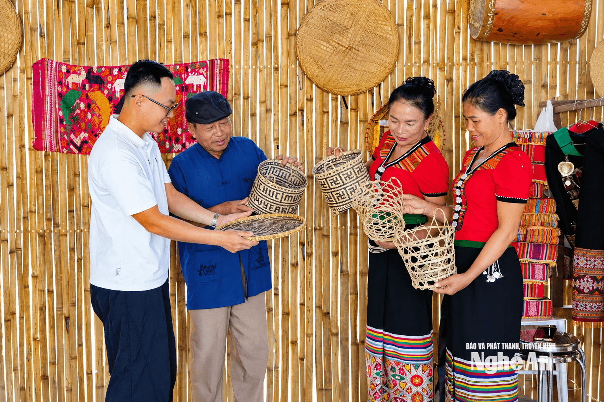
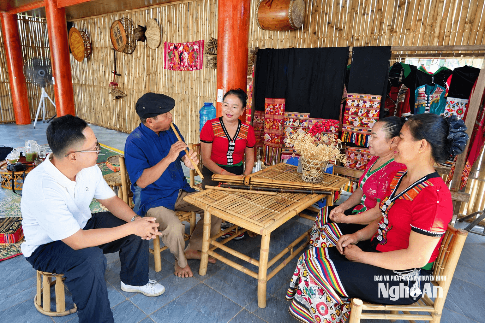
Thế nhưng, có một khoảng cách khá lớn giữa kinh nghiệm quản lý gần 100 nhân viên ở một chuỗi nhà hàng với việc trở về bản làng. Ở thành phố, Sướng quen với quy trình, nhân sự, khách hàng, doanh thu; còn về quê, anh phải bắt đầu từ những thứ chưa được thị trường gọi tên.
Không có sẵn thương hiệu, không có sẵn dòng khách, càng không có sẵn một đội ngũ cùng chia sẻ cách làm. Những người biết dệt thổ cẩm, chế biến món ăn truyền thống hay biểu diễn văn nghệ ở bản vốn làm những công việc ấy như một phần đời sống, chứ chưa quen nghĩ đó là dịch vụ dành cho du khách. Ngay trong gia đình, việc tiếp xúc, trò chuyện với những người khách từ nơi khác đến cũng là trải nghiệm mới.
Điều khiến Sướng suy nghĩ nhiều nhất không chỉ là làm sao có khách tìm đến, mà còn là liệu những giá trị văn hóa ấy có đủ sức giữ người trẻ ở lại quê hương. Anh lo rằng nếu nghề dệt thổ cẩm chỉ còn được nhắc đến như một truyền thống cần gìn giữ, nhưng người làm nghề không có thu nhập, thì lớp trẻ sẽ ngày càng ít mặn mà. Với ẩm thực, âm nhạc hay tiếng nói của dân tộc Thái cũng vậy, những giá trị ấy chỉ thực sự có sức sống khi tiếp tục hiện diện trong đời sống cộng đồng.
Từ kinh nghiệm kinh doanh dịch vụ, Sướng nhìn thấy khả năng kết nối giữa việc gìn giữ văn hóa và tạo sinh kế, dù con đường để biến ý tưởng thành công việc ổn định còn không ít thử thách.
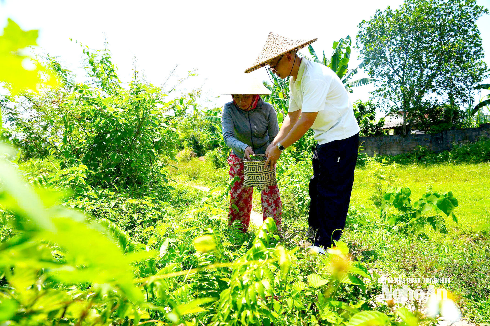
3. Thông điệp kết nối: Bình minh của thế hệ nông dân tri thức
Hai cuộc trở về, hai điểm xuất phát rất khác nhau: Vợ chồng anh Việt - chị Nhung rời công việc ổn định để gây dựng trang trại, còn Sướng rời môi trường quản lý hiện đại để bắt đầu từ văn hóa bản làng. Họ không có sẵn câu trả lời khi đặt chân về quê.
Nhưng chính quá trình làm lại từ đầu khiến họ nhận ra rằng, những gì quê hương đang có không chỉ là ký ức hay nơi chốn để trở về, mà còn có thể là điểm khởi đầu cho một con đường lập nghiệp mới.
Đó chính là diện mạo của những "Nông dân thế hệ mới": Họ không làm nông nghiệp bằng sự cam chịu hay manh mún cũ kỹ, mà mang theo tri thức khoa học, công nghệ số, tư duy thị trường và tình yêu văn hóa nguồn cội để biến tài nguyên quê hương thành những chuỗi giá trị bền vững, lan tỏa sức sống mới trên khắp các rẻo cao miền Tây.
- Năm 2006 Nguyễn Viết Việt tốt nghiệp ĐH Nông Lâm loại Giỏi, tuyển thu hút về Chi cục Lâm nghiệp tỉnh; 15 năm cống hiến ổn định.
- Năm 2020 – 2023 Anh Việt nghỉ việc nhà nước, chị Nhung từ bỏ vị trí quản lý y tế về Nghĩa Hành gom 2,5 ha đất lập trang trại tuần hoàn.
- Năm 2018 – 2024 Sầm Ngọc Sướng tốt nghiệp ĐH, tu nghiệp 4 năm tại Singapore, làm Tổng giám đốc chuỗi nhà hàng cao cấp tại TP.HCM.
- Năm 2025 Sầm Ngọc Sướng trở về bản làng miền Tây sáng lập Nhà Sam, biến văn hóa Thái thành mô hình du lịch trải nghiệm cộng đồng.